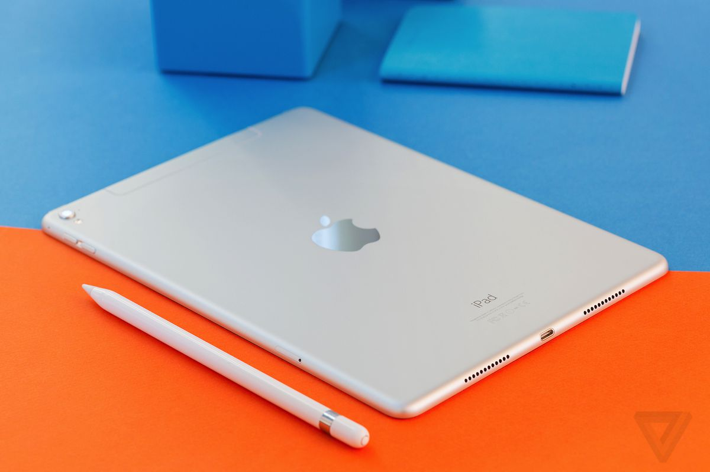

Mai subţire, mai uşor, bazat numai pe idei mari.
Odată ce pui mâna pe iPad, nu o să-l mai pui jos. Aceasta este marea idee din spatele designului complet nou. Este cu 33% mai subţire şi cu până la 15% mai uşor, aşa că se simte şi mai confortabil în mâinile tale. Face ca navigarea pe internet, verificarea e-mailului, vizionarea filmelor şi citirea cărţilor să fie atât de naturale că ai putea uita că ai la îndemână o tehnologie incredibilă.

Două camere. Şi bine ai venit FaceTime pentru iPad.
Ai să vezi două camere video la iPad — una în faţă şi alta în spate. Poate că sunt micuţe, dar fac lucruri mari. Sunt proiectate pentru apelurile video FaceTime şi lucrează împreună pentru ca tu să poţi vorbi cu cei dragi şi să-i vezi cum îţi zâmbesc. Camera video din faţă te pune pe tine şi prietenul tău faţă în faţă. Comută pe camera din spate în timpul apelului video pentru a arăta unde eşti, cu cine sau ce se întâmplă în jurul tău. Dacă merită filmat, dă drumul la camera video. Este HD, aşa că fiecare videoclip pe care îl filmezi este o mică operă de artă. Şi poţi să faci instantanee trăznite în Photo Booth. Nu-i altă distracţie mai mare când e şi altcineva de faţă.
iPad Smart Cover. Proiectat pentru iPad. Şi viceversa.
iPad şi iPad Smart Cover sunt făcuţi unul pentru celălalt. Am proiectat iPad Smart Cover pentru a lucra alături de iPad — ba chiar şi deasupra şi dedesubt. Tehnologia magnetică inteligentă încorporată în fiecare le atrage. iPad Smart Cover se potriveşte perfect şi nu alunecă, protejând astfel ecranul iPad-ului fără a-i îngroşa designul subţire şi uşor. Deschide Smart Cover şi iPad-ul tău se reactivează instantaneu. Închide-l şi iPad-ul tău intră în repaus în mod automat. Un alt lucru inteligent: se transformă în stativul perfect pentru vizionarea de filme, gameplaying şi navigarea pe internet. Disponibil în 10 culori strălucitoare — inclusiv cinci din piele italienească, vopsită în anilină. Alege-ţi coperta preferată şi iPad-ul tău va fi elegant din toate punctele de vedere.

Ecran cu retroiluminare LED. Priveliştea e uimitoare.
iPad este pur şi simplu un ecran mare şi grozav — 9.7 inchi de fotografii de înaltă rezoluţie, filme, pagini web şi mult mai mult. Retroiluminarea LED face tot ceea ce vezi remarcabil de clar, de viu şi luminos. Chiar şi în locuri cu lumină scăzută, precum un avion. Şi nu există o modalitate greşită de a ţine iPad-ul. Este proiectat pentru a afişa totul în modurile portrait şi landscape, astfel că la fiecare întoarcere (chiar şi invers), afişajul se ajustează pentru a încadra conţinutul. Şi fiindcă utilizează o tehnologie de afişare numită IPS (in-plane switching), are un unghi de vizionare larg, de 178°. Îndreaptă-l către cineva din partea cealaltă a camerei sau arată-i-l cuiva de lângă tine şi fiecare va avea parte de aceeaşi vedere extraordinară.

Multi-Touch. Totul la îndemână.
Tehnologia este bună atunci când face din utilizare ceva natural, ca să uiţi pur şi simplu de ea. Aşa este Multi-Touch pe iPad. Îţi foloseşti degetele pentru a face orice, aşa că orice faci — navigare pe internet, scrierea e-mailurilor, citirea cărţilor sau trecerea prin fotografii — este mai uşor şi mult mai distractiv. Cum funcţionează? Când degetele tale ating ecranul, acesta le percepe prin intermediul câmpurilor electrice. Apoi transformă instantaneu atingerile şi mişcările tale în acţiuni reale. Pur şi simplu.
Wi-Fi şi 3G. Două modalităţi grozave de a sta conectat.
Fiecare iPad este construit cu tehnologie 802.11 n wireless avansată. Aceasta găseşte automat reţele Wi-Fi, la care te poţi conecta prin câteva atingeri. iPad este disponibil, de asemenea, cu conectare 4G. Astfel încât, dacă eşti într-un loc fără Wi-Fi, precum la iarbă verde, într-o excursie cu cortul sau pe drum, poţi totuşi să navighezi pe internet, să-ţi verifici emailul sau să vezi trasee.
